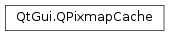

QPixmapCache¶
Synopsis¶
Detailed Description¶
The
PySide2.QtGui.QPixmapCacheclass provides an application-wide cache for pixmaps.This class is a tool for optimized drawing with
PySide2.QtGui.QPixmap. You can use it to store temporary pixmaps that are expensive to generate without using more storage space thanPySide2.QtGui.QPixmapCache.cacheLimit(). UsePySide2.QtGui.QPixmapCache.insert()to insert pixmaps,PySide2.QtGui.QPixmapCache.find()to find them, andPySide2.QtGui.QPixmapCache.clear()to empty the cache.
PySide2.QtGui.QPixmapCachecontains no member data, only static functions to access the global pixmap cache. It creates an internalQCacheobject for caching the pixmaps.The cache associates a pixmap with a user-provided string as a key, or with a
QPixmapCache.Keythat the cache generates. UsingQPixmapCache.Keyfor keys is faster than using strings. The string API is very convenient for complex keys but theQPixmapCache.KeyAPI will be very efficient and convenient for a one-to-one object-to-pixmap mapping - in this case, you can store the keys as members of an object.If two pixmaps are inserted into the cache using equal keys then the last pixmap will replace the first pixmap in the cache. This follows the behavior of the
QHashandQCacheclasses.The cache becomes full when the total size of all pixmaps in the cache exceeds
PySide2.QtGui.QPixmapCache.cacheLimit(). The initial cache limit is 10240 KB (10 MB); you can change this by callingPySide2.QtGui.QPixmapCache.setCacheLimit()with the required value. A pixmap takes roughly (width * height * depth )/8 bytes of memory.The Qt Quarterly article Optimizing with
PySide2.QtGui.QPixmapCacheexplains how to usePySide2.QtGui.QPixmapCacheto speed up applications by caching the results of painting.See also
QCachePySide2.QtGui.QPixmap
-
class
PySide2.QtGui.QPixmapCache¶
-
static
PySide2.QtGui.QPixmapCache.cacheLimit()¶ Return type: PySide2.QtCore.intReturns the cache limit (in kilobytes).
The default cache limit is 10240 KB.
-
static
PySide2.QtGui.QPixmapCache.clear()¶ Removes all pixmaps from the cache.
-
static
PySide2.QtGui.QPixmapCache.find(key, pixmap)¶ Parameters: - key – unicode
- pixmap –
PySide2.QtGui.QPixmap
Return type: PySide2.QtCore.boolUse bool find(const
PySide2.QtCore.QString&,PySide2.QtGui.QPixmap*) instead.
-
static
PySide2.QtGui.QPixmapCache.find(key) Parameters: key – unicode Return type: PySide2.QtGui.QPixmapThis is an overloaded function.
Returns the pixmap associated with the
keyin the cache, or null if there is no such pixmap.Warning
If valid, you should copy the pixmap immediately (this is fast). Subsequent insertions into the cache could cause the pointer to become invalid. For this reason, we recommend you use bool find(const
PySide2.QtCore.QString&,PySide2.QtGui.QPixmap*) instead.Example:
pm = QPixmap() if not QPixmapCache.find("my_big_image", pm): pm.load("bigimage.png") QPixmapCache.insert("my_big_image", pm) painter.drawPixmap(0, 0, pm)
-
static
PySide2.QtGui.QPixmapCache.find(key, pixmap) Parameters: - key – unicode
- pixmap –
PySide2.QtGui.QPixmap
Return type: PySide2.QtCore.boolLooks for a cached pixmap associated with the given
keyin the cache. If the pixmap is found, the function setspixmapto that pixmap and returnstrue; otherwise it leavespixmapalone and returnsfalse.Example:
pm = QPixmap() if not QPixmapCache.find("my_big_image", pm): pm.load("bigimage.png") QPixmapCache.insert("my_big_image", pm) painter.drawPixmap(0, 0, pm)
-
static
PySide2.QtGui.QPixmapCache.find(key, pixmap) Parameters: - key –
PySide2.QtGui.QPixmapCache::Key - pixmap –
PySide2.QtGui.QPixmap
Return type: PySide2.QtCore.boolLooks for a cached pixmap associated with the given
keyin the cache. If the pixmap is found, the function setspixmapto that pixmap and returnstrue; otherwise it leavespixmapalone and returnsfalse. If the pixmap is not found, it means that thekeyis no longer valid, so it will be released for the next insertion.- key –
-
PySide2.QtGui.QPixmapCache.find(arg__1) Parameters: arg__1 – PySide2.QtGui.QPixmapCache::Key
-
static
PySide2.QtGui.QPixmapCache.insert(key, pixmap)¶ Parameters: - key – unicode
- pixmap –
PySide2.QtGui.QPixmap
Return type: PySide2.QtCore.boolInserts a copy of the pixmap
pixmapassociated with thekeyinto the cache.All pixmaps inserted by the Qt library have a key starting with “$qt”, so your own pixmap keys should never begin “$qt”.
When a pixmap is inserted and the cache is about to exceed its limit, it removes pixmaps until there is enough room for the pixmap to be inserted.
The oldest pixmaps (least recently accessed in the cache) are deleted when more space is needed.
The function returns
trueif the object was inserted into the cache; otherwise it returnsfalse.
-
static
PySide2.QtGui.QPixmapCache.insert(pixmap) Parameters: pixmap – PySide2.QtGui.QPixmapReturn type: PySide2.QtGui.QPixmapCache::KeyInserts a copy of the given
pixmapinto the cache and returns a key that can be used to retrieve it.When a pixmap is inserted and the cache is about to exceed its limit, it removes pixmaps until there is enough room for the pixmap to be inserted.
The oldest pixmaps (least recently accessed in the cache) are deleted when more space is needed.
-
static
PySide2.QtGui.QPixmapCache.remove(key)¶ Parameters: key – unicode Removes the pixmap associated with
keyfrom the cache.
-
static
PySide2.QtGui.QPixmapCache.remove(key) Parameters: key – PySide2.QtGui.QPixmapCache::KeyRemoves the pixmap associated with
keyfrom the cache and releases the key for a future insertion.
-
static
PySide2.QtGui.QPixmapCache.replace(key, pixmap)¶ Parameters: - key –
PySide2.QtGui.QPixmapCache::Key - pixmap –
PySide2.QtGui.QPixmap
Return type: PySide2.QtCore.boolReplaces the pixmap associated with the given
keywith thepixmapspecified. Returnstrueif thepixmaphas been correctly inserted into the cache; otherwise returnsfalse.- key –
-
static
PySide2.QtGui.QPixmapCache.setCacheLimit(arg__1)¶ Parameters: arg__1 – PySide2.QtCore.intSets the cache limit to
nkilobytes.The default setting is 10240 KB.
© 2018 The Qt Company Ltd. Documentation contributions included herein are the copyrights of their respective owners. The documentation provided herein is licensed under the terms of the GNU Free Documentation License version 1.3 as published by the Free Software Foundation. Qt and respective logos are trademarks of The Qt Company Ltd. in Finland and/or other countries worldwide. All other trademarks are property of their respective owners.